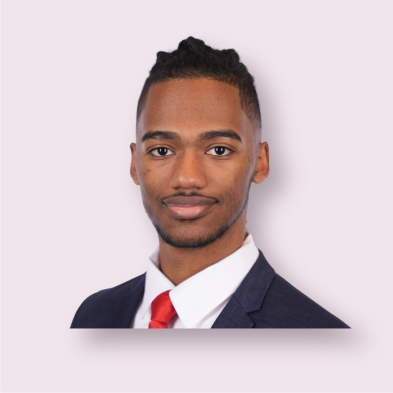
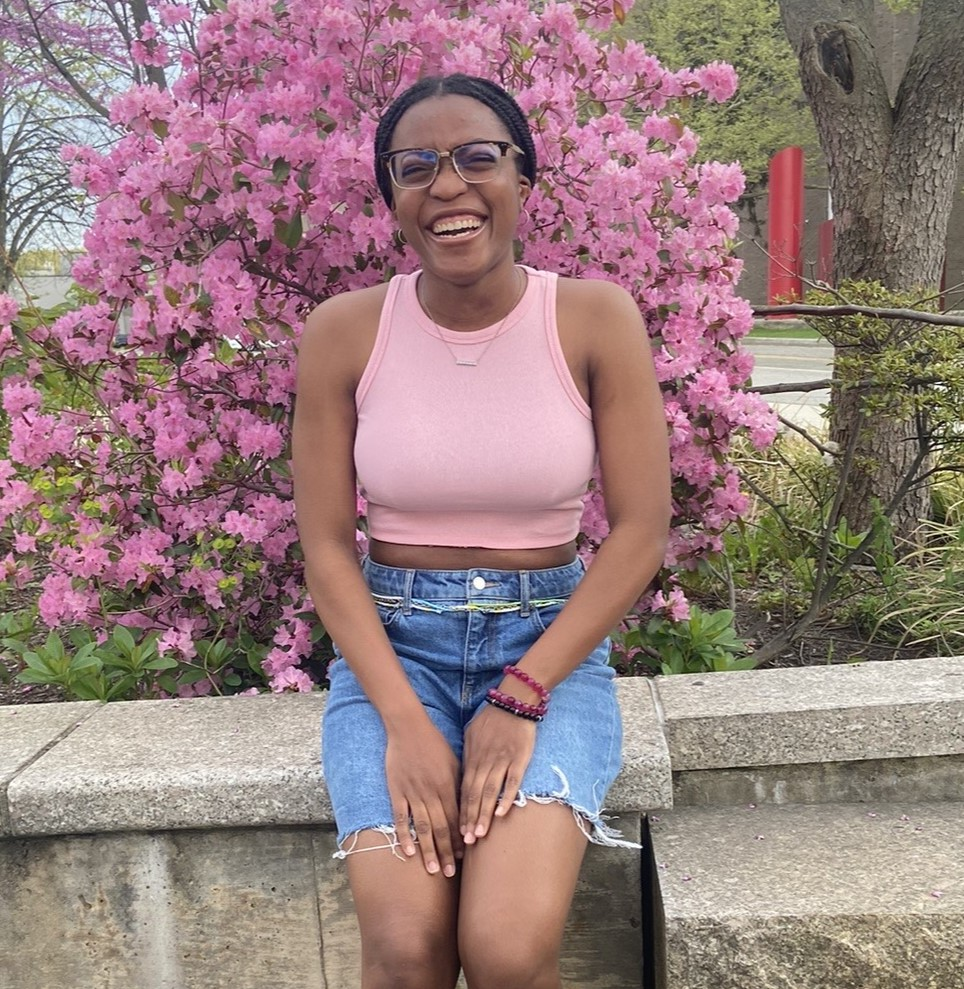

Testimonials

“ As a freshman coming into college I was clueless to many aspects of the professional world. NSBE showed me the value of networking, self marketing, and the skills I needed to succeed in my desired career. I was able to secure an electrical engineering internship at Dupont, and a project engineering internship at Gilbane directly through NSBE. ”
Joshua Szala
President of SBU Chapter

“ Without NSBE's presence on campus, I wouldn’t have had the incredible opportunity to attend the 2023 NSBE Conference, which directly led to my research opportunity at Iowa University. This research experience was pivotal, ultimately helping me secure an internship at Zebra Technologies. From its strong emphasis on professionalism to its unwavering support in academics, NSBE is a well-rounded organization that empowers individuals to excel in every aspect of life. ”
Wilensky Coleau
Region 1 Programs Chair

“ My journey with NSBE began with an invitation to be on my chapter’s BEYA 2024 planning committee. Starting with my experience at BEYA, I was exposed to a multitude of opportunities to explore the STEM industry, grow my professional skills and expand my network. The resources that NSBE has to offer has guided me towards achieving my aspirations in the STEM field. I look forward to using the tools I’ve gained as Public Relations Chair to fulfill NSBE’s mission statement! ”
Samiah Cann
Public Relations Chair
“ Being a member of NSBE has been a truly enriching experience for me. The club has not only fostered my professional development but also contributed significantly to my academic growth. Through NSBE, I’ve had the opportunity to connect with professionals across various fields and meet exceptionally talented individuals within the community. One highlight of my NSBE experience was participating in the 2024 BEYA convention, where I was fortunate enough to receive an internship offer at Booz Allen through this event. I’m deeply grateful for all that NSBE has provided me—it’s an invaluable resource for connecting people from diverse backgrounds and walks of life. ”
Michael Ezem
NSBE Member

“ Joining Stony Brook's NSBE chapter reinforced my motivation to pursue a career in STEM. Between our alumni, advisors, and collegiate members, I feel empowered being surrounded by people of color who are driven towards their academic and professional ambitions. Since my freshman year, Stony Brook's NSBE chapter has been a safe space for me to speak honestly about my academic shortcomings and triumphs knowing that my peers will empathize with, support, and guide me. This environment inspired me to step into the role of Senator and acting Parliamentarian for our chapter in order to extend our impact to students such as myself on campus and beyond. ”
Ahmik Muhammad
Senator of SBU Chapter

“ Joining NSBE about a year ago has been a transformative experience for me. The opportunity to attend conferences and learn how to effectively communicate and build rapport with professionals in the engineering field has been invaluable. The support from the e-board and fellow members has been incredible, with everyone genuinely invested in my success. The network and knowledge I’ve gained through NSBE have greatly enriched my journey in engineering, making it an essential part of my academic and professional growth. ”
Zion Brown
Senator of SBU Chapter

“ Joining NSBE has been a life-changing decision. Throughout my time at Stony Brook, I have developed both personally and professionally. NSBE provided me with the incredible opportunity to coordinate the BEYA STEM DX 38 conference. Through this experience I learned what it takes to be a leader and I ensured every component of a plan came to fruition. The network, knowledge, and experiences I’ve gained through NSBE has greatly broadened my undergraduate journey. ”
Olumachi Uwakwe
Vice-President of SBU Chapter

“ NSBE has benefited me in the amount of connections I've been able to make with other engineers, either through the chapter at my school or through the conferences we've been able to go to. Because of this, I've gotten the revitalized motivation to keep going with renewed vigor in my major, knowing how many others like me are out there doing their best in this major and overall field of study. ”